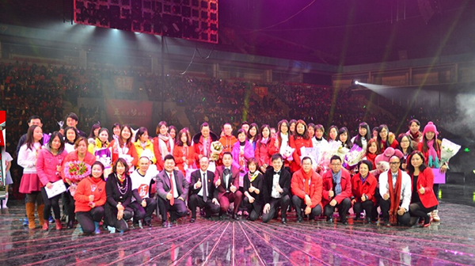
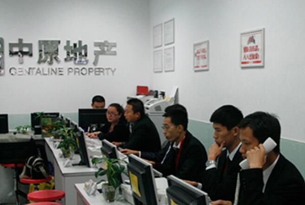

中原地产（深圳）
“皇牌代理，信心标记。公开资讯，不吃差价！”深圳中原地产是中原地产代理（深圳）有限公司的简称，成立于1997年，源于香港，属于香港中原集团，是深圳最具规模的大型专业地产代理公司，素有“皇牌代理 信心标记”的美誉。经过十多年的成长，稳步发展，员工人数已超过8000人，为政府土地投资提供调研服务，为开发商提供全程咨询策划及销售代理服务，为深港等地客户提供住宅、写字楼、商铺、厂房租售经纪服务以及按揭，评估等服务。
深圳中原成立十多年来，二级市场总计代理新楼盘千余个，成交面积近3000万平方米，成交金额约3400亿，年均增长率超过40%。自2001年起，深圳中原二级市场代理楼盘数量，代理楼盘销售量等均已位居深圳房地产市场首位，占有率连年持续攀升，至2012年均已超过50%的市场份额。
深圳中原住宅部一直推行“公开资讯、公平交易、不吃差价”、“第三方资金监管”等二手中介经营理念，已经成为倡导行业诚信和规范行业市场的引领者并得到了市场的充分认可。如今，深圳中原二手楼成交量已占深圳市场成交量的35%以上，远超行家，市场第一位置无法撼动。公司住宅部营业地铺（分行）超过300家，拥有全方位的房源信息、广泛的客户网络及行业中最先进的信息管理系统，继续引领行业发展。
深圳中原工商铺部秉承专业专注，诚信经营的理念，专注于为客户提供全面的商用物业解决方案，对商业地产项目进行市场分析定位、营销控制、商业设计，招商策划以及推广方案的执行及销售管理。工商铺部在写字楼，商铺，厂房租售等业务领域始终引领着市场的发展。 深圳中原实行“任人唯贤”的用人制度，给每个人以充分的成长和发展机会，定期组织内部培训，帮助员工进步和成长。2003年深圳中原在《财富》（中文版）及华信惠悦（Watson Wyatt Worldwide）举办的首届“卓越雇主— —中国最适宜工作的公司”调查评选中当选为十大企业之一，成为深圳唯一上榜企业。深圳中原坚持诚信经[1] 营，自觉依法纳税，2006至2009年间，连续四年荣获福田区纳税百强企业称号，2010年，深圳中原荣获福田区纳税亿元企业称号，持续树立诚信纳税的业界典范。

